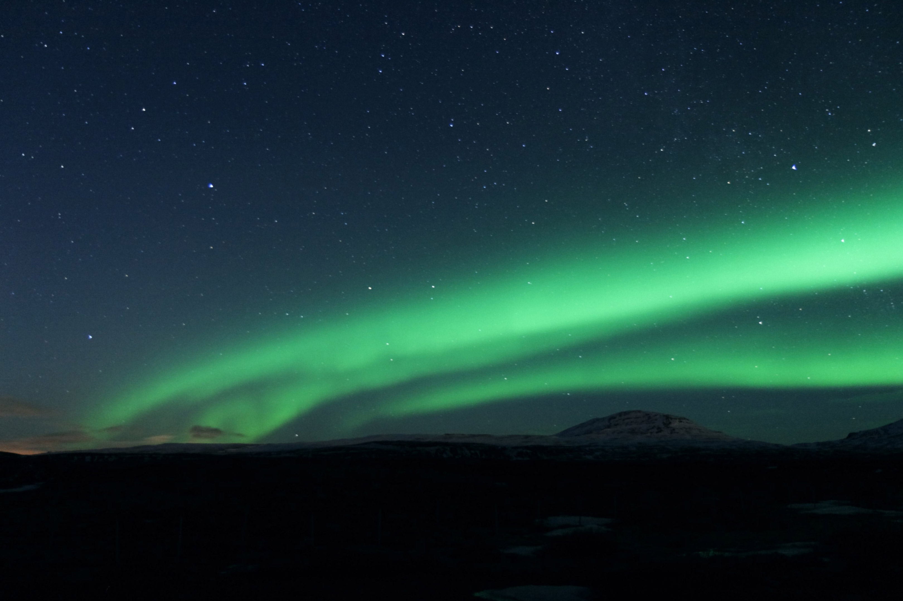

According to Clark (2007), there are four main forms that can be seen from the ground, from least to most visible:
A mild GLOW, near the horizon. These can be close to the limit of visibility, but can be distinguished from moonlit clouds because stars can be seen undiminished through the glow.
PATCHES or SURFACES that look like clouds.
ARCS curve across the sky.
RAYS are light and dark stripes across arcs, reading upwards by various amounts.
CORONAS cover much of the sky and diverge from one point on it.
Brekke (1994) also described some auroras as curtains. The similarity to curtains is often enhanced by folds within the arcs. Arcs can fragment or break up into separate, at times rapidly changing, often rayed features that may fill the whole sky. These are also known as discrete auroras, which are at times bright enough to read a newspaper by at night.
These forms are consistent with auroras' being shaped by Earth's magnetic field. The appearances of arcs, rays, curtains, and coronas are determined by the shapes of the luminous parts of the atmosphere and a viewer's position.